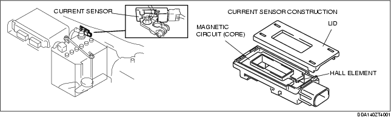

CURRENT SENSOR CONSTRUCTION [ZY]
id0140001595c0
• Hall element type has been adopted for the current sensor.
• Negative battery cable is inserted through the hole in the center of the current sensor and installed to the negative battery terminal.
